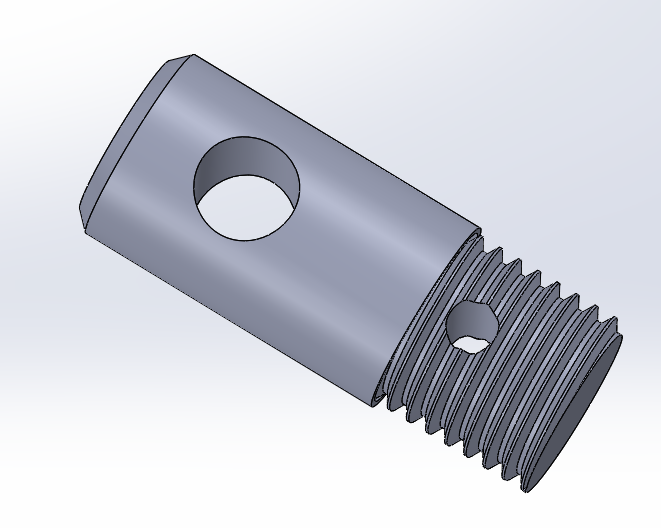
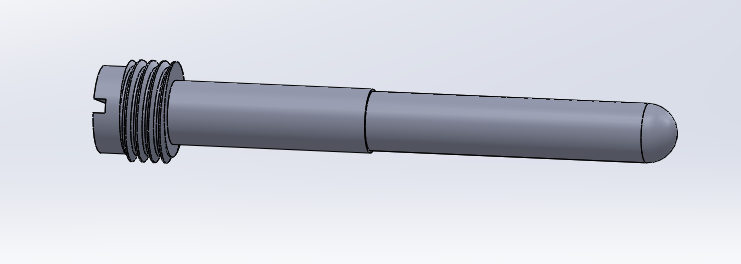
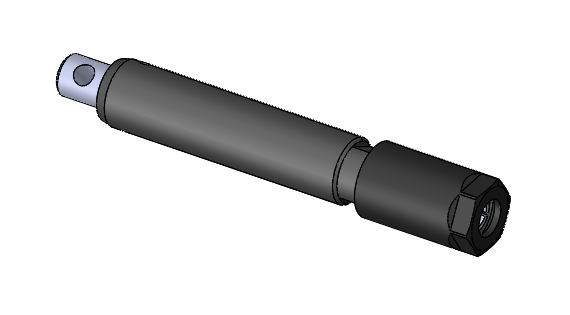

Approach
After brainstorming and understanding the design requirements, I decided to 3D model a collet chuck fixture
to secure the sample. The fixture included two main custom components. The first component was a bushing/mandrel
that was designed to act as support for the inside of the sample. The second component is the attachment to the
Instron. The custom designed components, the purchased collet and chuck were able to be manufactured into one
piece and could be used for testing.
To test this fixture, I was able to run through a few tests with some test samples. After the test runs,
I found that it was difficult to find a consistent way to secure the sample using this fixture - either the
fixture would be tightened too much and break at the grips (which is the same failure mode that we want to
avoid) and not tightening enough will cause the sample to slip from the fixture. After making a design change
to the length of the bushing/mandrel, the custom part was sent out to be manufactured - waiting on this custom
part to continue testing.
While waiting for this bushing/mandrel, a new design for this fixture was underway. I designed two caps that
can secure onto the pneumatic grips of the Instron - waiting on parts for testing of fixture.

Figure 3. 3D CAD Model of custom Instron to collet chuck adaptor

Figure 4. 3D CAD Model of custom device bushing/mandrel to go inside of the collet chuck fixture

Figure 5. 3D CAD Model Assembly of custom device bushing/mandrel, Instron adaptor, and collet chuck